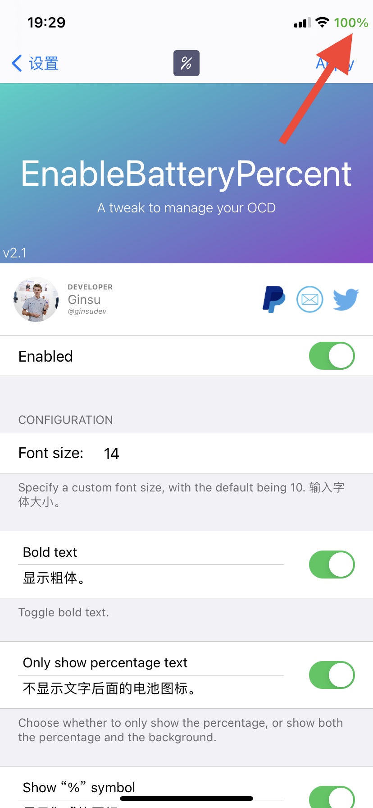

-
Show the battery percentage in the status bar.

In this version
-
2.1.2
- Bug fixes.
Previous updates
-
2.1.1
- Bug fix.
-
2.1
- Redesigned preferences.
-
2.0
- Bug fixes.
- Add "Show percentage only" for a sleek design.
- New preferences pane.
-
1.0.3
- Fix iOS 13 support.
-
1.0.2
- Add option for bold text.
-
1.0.1
- Add preferences.
- Add option to change the font size.
-
1.0.0
- Initial release.
Known Issues
- No current issues.